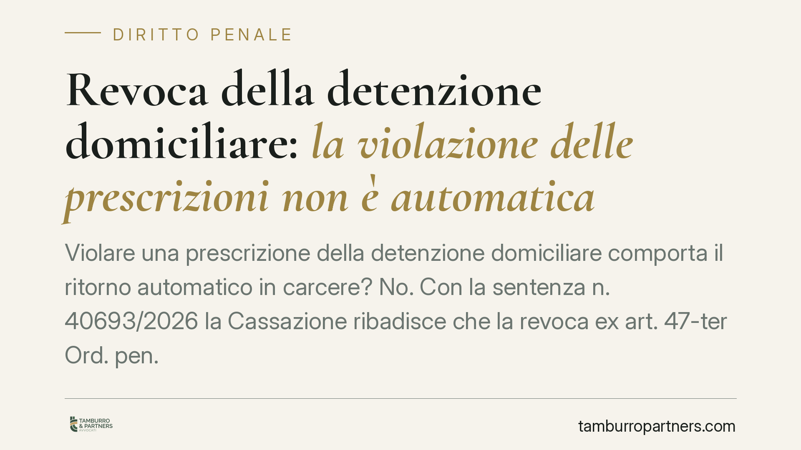

Revoca della detenzione domiciliare: la violazione delle prescrizioni non è automatica
Violare una prescrizione della detenzione domiciliare comporta il ritorno automatico in carcere? No. Con la sentenza n. 40693/2026 la Cassazione ribadisce che la revoca ex art. 47-ter Ord. pen. presuppone l'accertamento di un comportamento concretamente incompatibile con la prosecuzione della misura, non ogni inosservanza formale. Un principio che incide su migliaia di posizioni esecutive.

Il caso
Il Tribunale di sorveglianza di Trieste aveva revocato la detenzione domiciliare a un condannato per violazione delle prescrizioni imposte. Il difensore ha impugnato il provvedimento. La Prima Sezione penale della Cassazione, con la sentenza n. 40693/2026, ha annullato la decisione, chiarendo i presupposti che legittimano il ripristino della detenzione in carcere.
Il nodo è semplice nella sua portata pratica: non ogni trasgressione delle regole fa cadere la misura. Serve una valutazione in concreto.
Inquadramento normativo
La detenzione domiciliare è disciplinata dall'art. 47-ter della Legge 26 luglio 1975, n. 354 (Ordinamento penitenziario). Si tratta di una misura alternativa alla detenzione: il condannato sconta la pena presso la propria abitazione o altro luogo di cura, assistenza o accoglienza, con prescrizioni fissate dal magistrato di sorveglianza.
Il comma 6 del medesimo articolo prevede che la misura è revocata "se il comportamento del soggetto, contrario alla legge o alle prescrizioni dettate, appare incompatibile con la prosecuzione della misura". È proprio su questa clausola che si concentra la pronuncia.
La Cassazione valorizza l'avverbio e l'aggettivo decisivi: la revoca richiede che la condotta sia *incompatibile* con la prosecuzione. Non basta, quindi, la constatazione di una violazione isolata o di scarso rilievo. Occorre un giudizio prognostico sull'affidabilità del condannato e sulla tenuta del percorso rieducativo.
Il principio affermato
La revoca non è un automatismo sanzionatorio. Il Tribunale di sorveglianza deve motivare perché quel determinato comportamento rende la misura non più sostenibile, tenendo conto di gravità, frequenza e significato della violazione.
Una violazione formale o occasionale, in assenza di indici che segnalino un'inaffidabilità strutturale, non giustifica il ritorno in carcere. Diversamente, la misura alternativa perderebbe la sua funzione risocializzante, trasformandosi in un regime a sospensione immediata.
La Corte si pone in continuità con l'orientamento che impone al giudice dell'esecuzione una valutazione individualizzata, coerente con la finalità rieducativa della pena sancita dall'art. 27, comma 3, della Costituzione.
Implicazioni pratiche
Per chi sta scontando la pena in detenzione domiciliare, la pronuncia conferma uno spazio difensivo concreto. Il provvedimento di revoca non può limitarsi a elencare l'inosservanza: deve dimostrare l'incompatibilità con la prosecuzione.
Questo significa che molti provvedimenti fondati su violazioni minori — un ritardo, un'assenza giustificabile, un allontanamento momentaneo — risultano potenzialmente censurabili se privi di un'adeguata motivazione sul giudizio di incompatibilità.
Per il difensore, la sentenza offre un parametro di controllo: verificare se il Tribunale di sorveglianza abbia effettuato la valutazione in concreto o si sia limitato a un'applicazione meccanica del comma 6.
Resta fermo che comportamenti gravi, reiterati o indicativi di una sostanziale sottrazione al controllo giustificano la revoca. La pronuncia non è un lasciapassare: delimita i confini della discrezionalità, non la elimina.
Cosa fare in concreto
- Documentate ogni circostanza che possa giustificare l'inosservanza (impedimenti sanitari, esigenze lavorative, cause di forza maggiore): la prova della giustificazione è decisiva.
- Impugnate tempestivamente il provvedimento di revoca davanti al Tribunale di sorveglianza o in Cassazione, verificando la presenza di una motivazione sull'incompatibilità.
- Evidenziate il percorso positivo già svolto: rispetto complessivo delle prescrizioni, attività lavorativa, legami familiari stabili.
- Contestate gli automatismi: se il provvedimento desume la revoca dalla sola violazione, sollecitate il controllo di legittimità sulla motivazione.
- Consigliamo di segnalare preventivamente al magistrato di sorveglianza ogni difficoltà nell'osservanza, evitando che un problema gestibile si trasformi in una violazione contestata.
Conclusioni
La sentenza n. 40693/2026 ricorda che la detenzione domiciliare è una misura a vocazione rieducativa, non un regime sospeso al primo passo falso. Il giudizio di incompatibilità è il filtro che separa la violazione formale dalla rottura del patto esecutivo. Un filtro che va motivato, non presunto.
---
*Contributo informativo a cura di Tamburro & Partners - Avv. Giuseppe Tamburro. Non costituisce parere legale.*
Ogni condominio ha una storia a sé.
Se gestisci un'amministrazione e vuoi un confronto su una specifica questione condominiale, scrivi allo studio. Ti rispondiamo entro un giorno lavorativo.